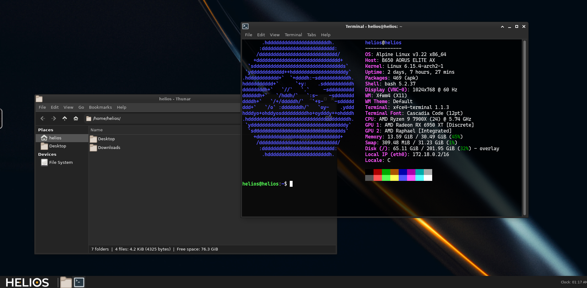
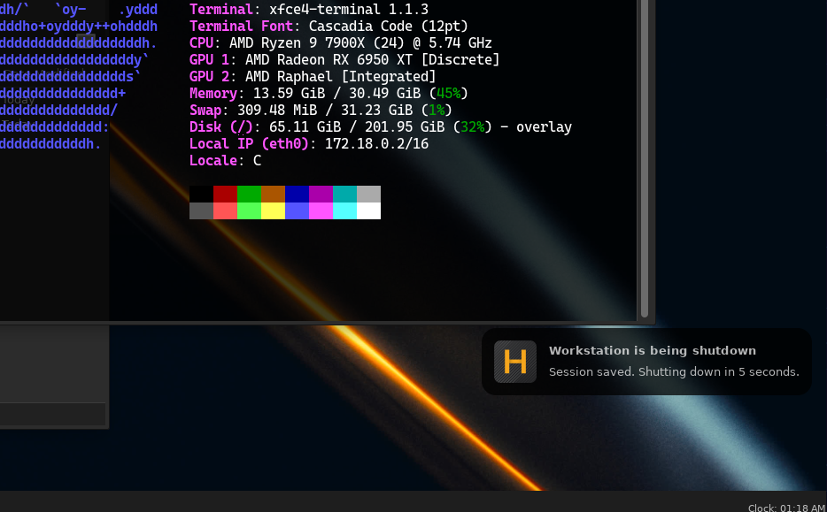
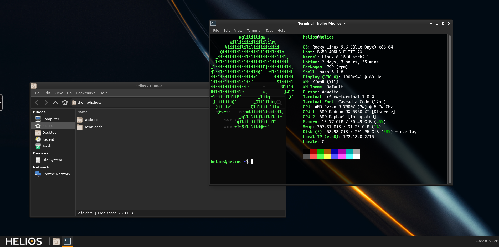

XFCE4 Session¶
Helios ships with a default shutdown.d script that saves the current xfce4 desktop session to the user's home directory.
This allows the workstation to relaunch all applications that were running when the session was closed.
Docker Compose¶
Docker Compose Version
pre_stop is only available in Docker Compose version 2.30.0 and above. Ensure you are using a compatible version. You can read more about this feature in the Docker Compose documentation.
To enable this feature, you need to follow these steps:
- Mount a Persistent Volume: Ensure that you have a persistent volume mounted to
/homein your container. This is where the session data will be stored. - Add a Pre-Stop Directive: Modify your
compose.yamlfile to include apre_stopdirective that points to the shutdown script located at/etc/helios/shutdown.d/custom.sh. - Example Compose File: Below is an example of how to set this up in your
compose.yamlfile:
services:
helios:
image: helios:v0.0.0-noble
container_name: my-helios-container
pre_stop:
- command: /etc/helios/shutdown.d/custom.sh
volumes:
- /path/to/persistent/home:/home
restart: unless-stopped
This will ensure that the session is saved when the container is stopped, allowing you to resume your work on next launch.
Kubernetes¶
In a Kubernetes environment, you can achieve similar functionality by using a preStop hook in your pod specification. This hook will execute the shutdown script before the container is terminated.
To enable this feature, you need to follow these steps:
- Mount a Persistent Volume: Ensure that you have a persistent volume mounted to
/homein your pod. This is where the session data will be stored. - Add a Pre-Stop Hook: Modify your pod specification to include a
preStophook that points to the shutdown script located at/etc/helios/shutdown.d/custom.sh. - Example Pod Specification: Below is an example of how to set this up in your pod specification:
apiVersion: v1
kind: Pod
metadata:
name: my-helios-pod
spec:
containers:
- name: helios
image: helios:v0.0.0-noble
volumeMounts:
- name: home-volume
mountPath: /home
lifecycle:
preStop:
exec:
command: ["/etc/helios/shutdown.d/custom.sh"]
volumes:
- name: home-volume
persistentVolumeClaim:
claimName: my-pvc
This will ensure that the session is saved when the pod is terminated, allowing you to resume your work on next launch.
Example Workflow¶
Here is an example workflow for using session persistence with Helios:
- Launch a Helios Container: Start your Helios container with the necessary configurations as described above.
- Run Your Applications: Use the Helios desktop environment to run your applications as you normally would. 
- Shutdown the Container: When you are done, shut down the container. The shutdown script will automatically save your session. 
- Select a Different Helios Container Distro: If you want to switch to a different Helios container distro, such as Rocky Linux, you can do so without losing your session.
- Launch the New Container: Start the new Helios container with the same persistent volume mounted to
/home. - Resume Your Session: The new container will automatically restore your previous session, allowing you to continue where you left off. 